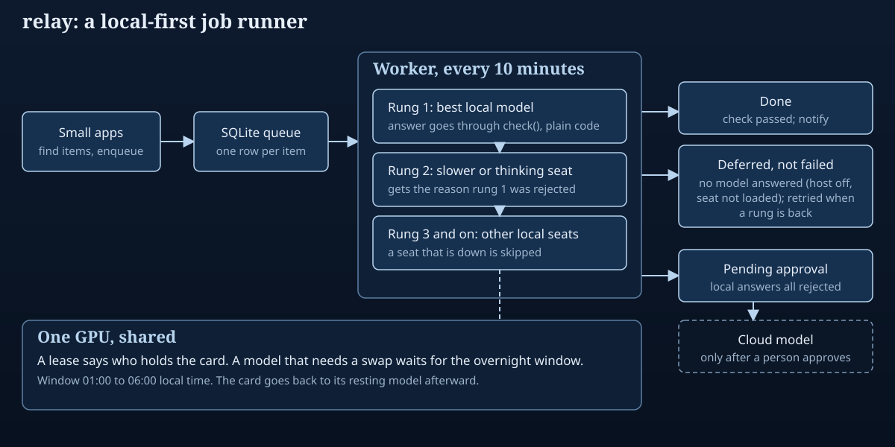

relay: a local-first job runner where code checks every answer
Spencer Brimley · Python, SQLite, llama.cpp · Oct to Nov 2026
At a glance
- Problem: I wanted small jobs that need a language model (extract fields from a listing, summarize a long document, narrate a server health check) to run on my own GPU, and I did not want to trust a model's answer just because it sounded right.
- What I built: a job queue and a ladder of local models. Every task has a plain-code
check(). A rejected answer moves to the next model along with the reason it was rejected. - The rule: the model reads, code decides. A cloud model is reached only after I approve a specific job.
- Results: from 18 October to 16 November 2026, 56 of 65 jobs on three tasks finished on the local GPU with no cloud call. Nothing was sent to a cloud model.
- Status: running on my own hardware. No public repository yet.

The problem
I run a few small language-model jobs at home on one 4 GB GPU. Three of them are described here: pulling structured fields out of public rental listings, writing a summary of a long document with its claims checked against the source, and narrating a morning health check of my servers.
A small model is fast and free, and it is wrong some of the time. It also breaks in ways that have nothing to do with the answer: the machine is off, the model is not loaded, another job holds the GPU. I wanted one place that handled all of that, so each job could stay a short piece of code.
What I built
About 10,600 lines of Python with 340 test functions. The pieces:
- Small apps that find items and put them in a SQLite queue. They never call a model. Each item has a unique key, so adding the same item twice does nothing.
- A worker that runs every 10 minutes under a lock. It claims queued jobs and walks the ladder of local models.
- A task module for each kind of job: how to ask the model, a
check()for its answer, and what to do when the job is done. - A GPU lease and an overnight window, because one card can hold one model at a time.
- An approval step for the cloud, from the command line or from a chat message to an agent.
How it decides
- Start at the top rung. Before calling a model, the worker asks it whether it is up, with a 5-second timeout. A rung that does not answer is skipped, not waited on.
- Check in code. Every answer goes through the task's
check(). For the listing task it requires strict JSON, values from an allowed list, and a rent that matches the listing's own price field. For the health-check task, every quote the model gives as evidence must appear word for word in the raw output, no flagged item may be dropped, and no unflagged item may be reported. - Reject with a reason. A rejected answer goes down to the next rung with the reason attached, so the next model knows what to fix.
- Defer, do not fail. If no model answered at all, because the host is off or the needed model is not loaded, the job is deferred and retried when a rung comes back. It is not counted as an attempt. A failure means a model answered and the check refused it.
- Cloud only on approval. The worker only ever uses local rungs. If every local answer is rejected and the task allows the cloud, the job waits as pending approval. A test fails if the worker ever touches a cloud host. Some tasks forbid the cloud outright, and the summary task refuses it for any document in a private folder.
- Share the GPU. Anything that moves the card first takes a lease. A model that needs a swap waits for a window from 01:00 to 06:00 local time, then the card goes back to its resting model. A lease belongs to a process that is alive, so a crash cannot leave the card locked.
Moving a job between states is a single update that only works from a legal state. If the cron worker and a person approving from the command line reach the same job together, one of them gets an error and the job is never run twice.
The model narrates, and code gates. On the health check, if the model fails or its quotes do not check out, the message that goes out is built by code from the check's own evidence and is titled "no model summary".
Results
- Local, no cloud calls. From 18 October to 16 November 2026 the queue held 65 jobs for the three tasks: 46 listing extractions, 18 health checks and 1 summary. 56 finished, 5 failed, and 4 were waiting for the overnight window when I counted. No job went to a cloud model.
- The checker caught invented evidence. Two of the five health-check failures were the model quoting evidence that was not in the check's output. The other three were infrastructure errors (the GPU memory did not free twice, and the card did not hand back cleanly once).
- An outage is not a loss. In a scripted test with the model host off, three jobs were deferred with no attempts used. After a stand-in model came up, the next pass finished all three.
- A model for the job. On a test of 23 listings, one run each, the top local model got 21 right at about 8 seconds a listing. That is a small sample, and I say so.
These counts come from the queue database and the task notes, read on 16 November 2026. Jobs from my own job-search tooling are left out of this page on purpose.
What went wrong
Until 12 November, a model router that refused a call or lost a loaded model was recorded as a model error. The job went to failed, and the app that adds jobs skipped any item it already had a row for, so nobody looked at it again. An outage quietly cost items. The fix was to treat "no model answered" as a different thing from "the model answered badly", which is the deferred state above. I capped how many times a refusal can defer a job at eight, so waiting cannot become a new way to fail.
Links
- The same rule in a business setting: Bill checker
- The hardware it runs on: Homelab
- Tests of local models on this GPU: small-gpu-bench
- No repository yet.